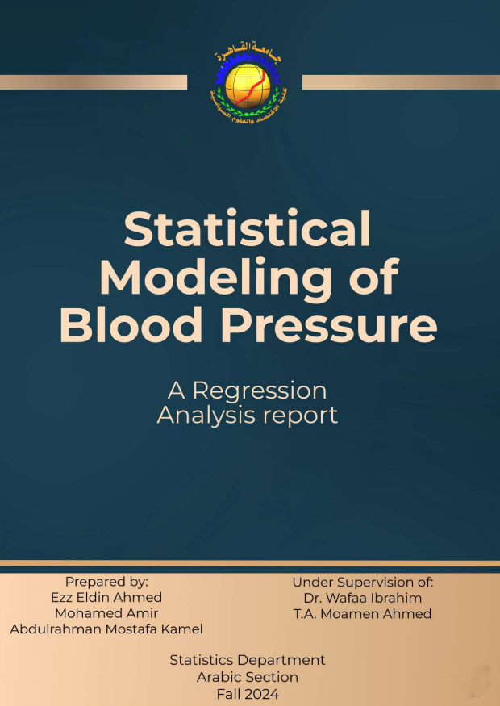
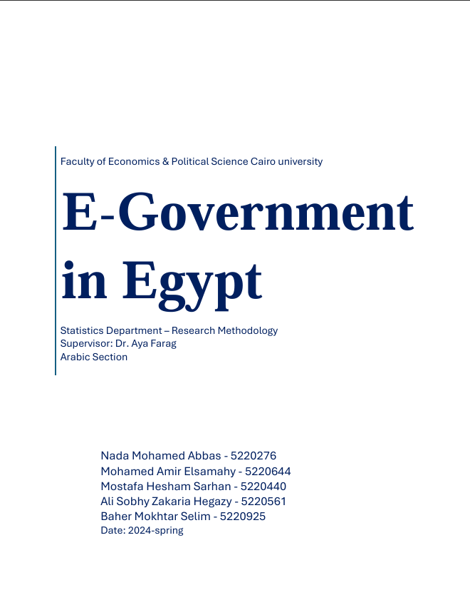

Portfolio
ABM Report: Invasive Species Impact in Egypt
Agent-Based Model of water hyacinth invasions, biocontrol, and ecosystem dynamics in Egypt.
NetLogo
BehaviorSpace
R
Mermaid
Read More
Climate vs. Youth Unemployment in Egypt (1991–2023)
Statistical analysis of NASA temperature anomalies and World Bank unemployment data using Python modeling.
Python
Jupyter
pandas
statsmodels
scikit-learn
seaborn
Read More
World Cup Database
Relational database for FIFA World Cup data with 11 core entities, complex queries, and user-friendly management.
SQL
MS Access
GitHub
Read More
Determinants of Milk Production Efficiency
Panel data analysis of Spanish dairy farms (1993–1998) using fixed effects and production function modeling.
R
plm
lmtest
sandwich
Read More


Time Series Analysis of the VIX (Volatility Index)
Forecasting the VIX Index (1990–2025) using ARIMA and decomposition. AR(1) model predicts stable volatility through 2034.
R
forecast
tseries
seasonal
Read More
